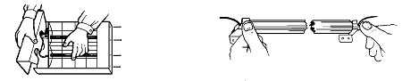
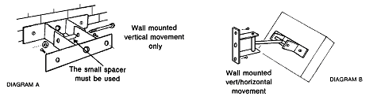

BN Thermic Instruction Sheet
Halogen Heaters
INSTALLATION AND OPERATING INSTRUCTIONS
The following information should be considered when installing Halogen Infrared Heaters.
Installation should always be carried out by a qualified electrician or a competent person in accordance with current electrical regulations, protected by a suitably rated isolator and fuse or type 3 mcb.
- The heaters should always be installed using the mounting brackets provided to ensure adequate clearance from the wall.
- A minimum air gap of 450mm should always be allowed between the top of the heater and the ceiling or roof.
- A safety distance of 1mtr should always be left in front of a 1.5KW heater. Heaters of 3KW and 4.5KW should have a safety distance of at least 1.5mts and the 6KW heater leave 2mts.
- You also should ensure no flammable material could come into contact with the heater.
- Heaters should not be installed in areas where hazardous vapours may be present as defined in BS5345
- It is recommended the heaters be operated with a guard in front of the lamp and should always be fitted to units mounted below 2.2mtrs.
- The safety guards are only intended to prevent large objects from directly hitting the lamps. Some applications will necessitate additional precautionary measures.
- The heater should only be installed in an indoor or weather protected environment.
The essential element of the heater is the halogen filled quartz linear lamp with a tungsten element. This operates at about 2200°C and is housed in a quartz sleeve to filter out the white light and emit short wave infrared radiant heat.
The lamp operates at full output almost instantly and emits a radiant energy of 1.2microns.
Quartz heaters are recommended by The Electricity council and Building Services Research Association for General space heating, Zone heating and localised spot heating
Before installing this heater, please read all the enclosed instructions carefully and follow any recommendations regarding installation and use.
Electrical installation
The H range comprises 1, 2 and 3 lamp Heater Models.
- One and two-lamp heater models are factory fitted with high temperature silicon rubber flexible cable conforming to BS 6500 having a temperature rating of 180°C continuous.
- Three-lamp heater models are factory wired according to the order specification i.e. single phase or 3 phase and neutral. Use high temperature silicon rubber flexible cable conforming to BS 6500 having a temperature rating of 180°C continuous.
- Appliances must be earthed.
- It is advised that Type 3 (Type C) MCBs are used. In multi-lamp single phase installations, in order to prevent the initial inrush current causing nuisance tripping, MCBs over rated by 60 - 70% may be required.
The H fitting has been packed with a separate wall mounting bracket and lamp(s) ready for attachment and fitting to the heater. Please leave the lamp(s) in transit packing until ready to fit.
Lamp Installation (If required)
1) Undo 4 screws on each end cover, remove covers and safety guard.
2) Peel protective cover from reflector.
3) Carefully remove lamp from its box, centre lamp to brackets with leads
pointing upwards.
4) Insert each end of lamp halfway under each spring clip.
5) Push each end of lamp with equal thumb pressure fully into clips.

N.B. Any inadvertent finger marks on the tube glass sleeve can be removed using methylated spirits on a soft cloth
6) Connect lamp leads to connector blocks. Tighten nuts/screws
7) Re-assemble heater by fitting one-end cover, then guard and second
end-cover.
8) Ensure no wires are trapped under end-covers before tightening screws.
9) Place heater face down and attach one ‘U’ bracket to back.

Location
- Heaters should be angled at 30° to 45° from the vertical whether wall or ceiling mounted.
- There must always be a minimum clearance of 450mm between top of heater and ceiling.
Wall mounting
- Decide whether vertical movement only (Diagram A) or vertical/horizontal movement (Diagram B) is required for correct positioning of heaters and assemble as shown.
- Avoid mounting heaters on structures liable to vibrate.
- Recommended mounting heights and safety distances should always be
observed.
| Wall mounting Height (Metres) |
Safety distance from Heater (Metres) |
|||
|---|---|---|---|---|
| Output | Minimum | Recommended | Maximum | Minimum |
| 1 or 1.5kW | 2.2 | 2.5 | 3.0 | 1.0 |
| 2kW | 2.2 | 2.5 | 3.2 | 1.5 |
| 3kW | 2.2 | 2.5 | 3.5 | 1.5 |
| 4kW | 2.5 | 3.5 | 4.0 | 1.5 |
| 4.5kW | 3.0 | 3.5 | 4.5 | 1.5 |
| 6.0kW | 3.5 | 4.0 | 5.5 | 2.0 |
Commissioning
- Perform Insulation and Earth continuity Tests.
- Switch on heater(s) and confirm that lamp(s) operating.
- Ensure each heater aims its warmth into the target area by adjusting heater angle(s) as necessary then tighten bracket bolts when satisfactory coverage is achieved.
- Check that lamp(s) remain in a horizontal plane for all angles of heater(s).
- Lamps must only be operated within 5° of the horizontal plane.
- The user/customer should be made aware of all aspects of operation and safety and strongly advised to retain these instructions for reference.
- In unoccupied premises it is recommended that the heating system is switched off and isolated from the electrical supply.
Maintenance
Halogen heaters contain no moving parts and therefore very little maintenance
is required other than to ensure that there is no excessive build?up of
dust/dirt on the reflectors or lamps as this can cause overheating and
premature lamp failure. Depending on siting conditions a heater should
be regularly inspected, but at least once per year.
Before any maintenance work is carried out
- Allow heater case/lamp to cool to avoid injury.
- Always isolate appliance(s) from electrical power supply.
- Re-read instructions prior to lamp replacement.
WARRANTY. Your BN Thermic product is guaranteed for one year from
date of purchase. We will repair or replace at our discretion any part
found to be defective. We cannot assume any consequential liability. This
guarantee is in no way prejudices your rights under common law and is
offered as an addition to consumer liability rights.